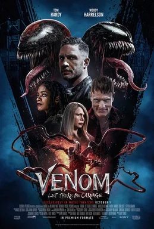
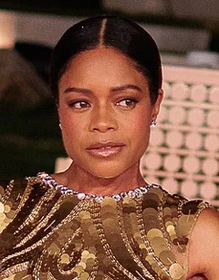
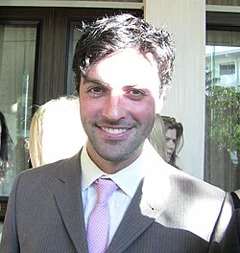
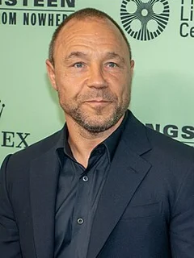
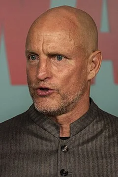

Venom: Let There Be Carnage (2021)
| Movie | Release Date | Poster |
|---|---|---|
| Venom: Let There Be Carnage PG-13 · 1h 37m · action · superhero In the mid-credits scene, Eddie Brock and Venom are pulled into another universe and see J. Jonah Jameson reveal Peter Parker's identity on television. |  |
| Trailer |
|---|
| Rotten Tomatoes | Metacritic | IMDb |
|---|---|---|
| 57% | 49/100 | View on IMDb |
| Overview |
|---|
Venom: Let There Be Carnage is a 2021 American superhero film based on the Marvel Comics character Venom. The sequel to Venom (2018) and the second film in Sony's Spider-Man Universe (SSU), it was directed by Andy Serkis from a screenplay by Kelly Marcel. Tom Hardy stars as Eddie Brock and Venom alongside Michelle Williams, Naomie Harris, Reid Scott, Stephen Graham, and Woody Harrelson. In the film, Eddie and the alien symbiote Venom must face serial killer Cletus Kasady (Harrelson) after he becomes the host of an offshoot of Venom named Carnage. Full plot (spoilers)In 1996, young Cletus Kasady 's lover, Frances Barrison , is taken away from St. Estes Home for Unwanted Children to the Ravencroft Institute . On the way, Frances uses her sonic scream powers to attack young police officer Patrick Mulligan . Mulligan shoots her in the eye and suffers an injury to his ear due to her scream. Mulligan believes he killed her, but Frances survives and her abilities are restricted at Ravencroft. In present day, Mulligan, now a detective, asks journalist Eddie Brock to speak to serial killer Cletus in San Quentin State Prison , as Cletus refuses to talk to anyone other than Eddie. After the visit, Eddie's alien symbiote Venom deduces where Cletus has hidden the bodies of his victims, which gives Eddie a considerable career boost. Trying to lay low from police attention, Eddie bans Venom from devouring criminals, which upsets Venom. Cletus, who has been found guilty of his crimes thanks to Eddie, and sentenced to death by lethal injection, invites Eddie to his execution. There, Cletus insults Eddie, provoking Venom to attack. This lets Cletus bite Eddie's hand, inadvertently ingesting a part of the symbiote. The event causes a bad argument between Venom and Eddie back home, as Venom wants more freedom and Eddie wants peace. The symbiote decides to leave Eddie's body and go off on its own. As Cletus's execution begins, a red symbiote emerges and blocks the injection. Named Carnage , it goes on a violent rampage through the prison, freeing inmates and killing guards. Carnage agrees to help Cletus break Frances out of Ravencroft in exchange for Cletus's help killing Eddie and Venom. Cletus frees Frances, and they travel to the St. Estes children's home to burn it down. Mulligan grows suspicious of Eddie and arrests him. Eddie contacts his ex-fiancée Anne Weying as his lawyer and asks her to find Venom. As Venom makes his way through San Francisco , hopping from body to body, Anne finds him bonded to Mrs. Chen and convinces him to forgive Eddie. Venom bonds with Anne, who reunites him with Eddie after Eddie apologizes to Venom. The pair escapes custody as Cletus and Frances take Mulligan and Anne hostage. The couple holds them at Grace Cathedral while they get married. Eddie and Venom arrive to fight Carnage. Venom is overpowered but provokes Frances into using her powers to separate Carnage and Cletus, after which he devours both. The collapsing cathedral crushes Frances. Mulligan, having survived Frances' murder attempt, becomes infected by a piece of Carnage. Eddie and Venom, now fugitives, take the beach vacation Venom always wanted while they ponder their next steps. In a mid-credits scene, as Venom tells Eddie about the symbiotes' knowledge of other universes, a blinding light suddenly transports them from their hotel room to another, where they watch J. Jonah Jameson talking about Spider-Man 's revealed identity as Peter Parker on television. |
| Actor | Character | Photo |
|---|---|---|
| Tom Hardy | Eddie Brock / Venom An investigative journalist who is the host of an alien symbiote , Venom, that imbues him with superhuman abilities. | |
| Michelle Williams | Anne Weying A defense attorney and Eddie's ex-fiancée, who briefly hosts Venom. | |
| Naomie Harris | Frances Barrison / Shriek Cletus's lover who can create sonic screams. |  |
| Reid Scott | Dan Lewis A doctor and Anne's fiancé. |  |
| Stephen Graham | Patrick Mulligan A detective hoping to use Eddie to find the remains of Cletus's murder victims. |  |
| Woody Harrelson | Cletus Kasady / Carnage A psychotic serial killer who becomes the host of Venom's spawn, Carnage. |  |
| Detail | Value |
|---|---|
| Directed by | Andy Serkis |
| Written by | Kelly Marcel |
| Produced by | Avi Arad, Amy Pascal, Matt Tolmach |
| Music by | Marco Beltrami |
| Cinematography | Robert Richardson |
| Edited by | Maryann Brandon |
| Production companies | Tencent Pictures, Columbia Pictures, Marvel Entertainment |
| Distributed by | Sony Pictures Releasing, InterCom |
| Running time | 97 minutes |
| MPAA rating | PG-13 |
| Budget | $110 million |
| Box office | $493 million |
Overview, plot, and cast descriptions are from Wikipedia (CC BY-SA 4.0). Credits, ratings, and box office are from Wikidata.